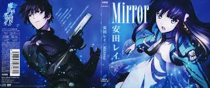
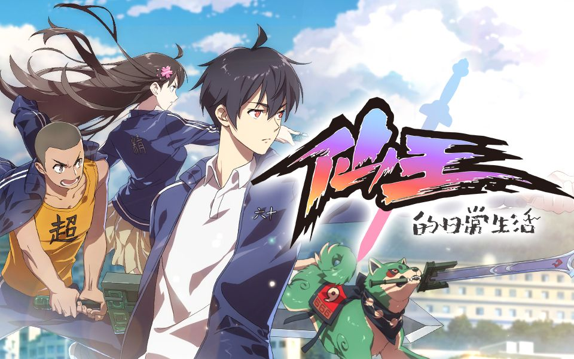
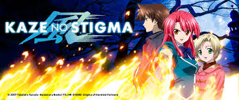

The story follows Tatsuya Shiba, a bodyguard to his sister Miyuki Shiba who is also a candidate to succeed the leadership of the Yotsuba clan, one of the Ten Master Clans that govern Japan's magicians. They enroll into First High School which segregates its students based on their magical abilities.
As a cultivation genius who has achieved a new realm every two years since he was a year old, Wang Ling is a near-invincible existence with prowess far beyond his control. But now that he's sixteen, he faces his greatest battle yet – Senior High School.
Kazuma Yagami is a user of "Fuujutsu," the ability to control the wind. He returns to his old home, the noble Kannagi household, after being banished four years ago for his inability to control fire and his subsequent defeat in a duel at the hands of his younger cousin, Ayano Kannagi.
